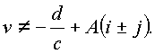
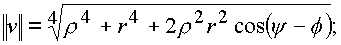
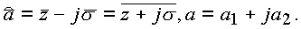
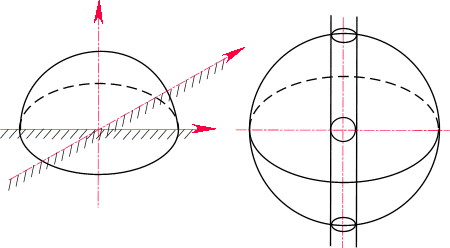

|
В. И. ЕЛИСЕЕВ ВВЕДЕНИЕ В МЕТОДЫ ТЕОРИИ
ФУНКЦИЙ ПРОСТРАНСТВЕННОГО КОМПЛЕКСНОГО ПЕРЕМЕННОГО |
|
1.8.1. Понятия конформного отображения в пространстве
Теорема 7. Пусть функция
W=f(n ) имеет в точке n 0 производную f’(n 0), отличную от нуля и от корней из нуля, то есть . Тогда эта функция реализует в точке конформные отображения. Это значит, что при переходе из пространства (n ) в пространство (W) касательная к любой гладкой кривой в фиксированной точке n 0 поворачивается на один и тот же угол в пространстве и имеет один и тот же коэффициент растяжения.Доказательство. Пусть в некоторой области пространства (n
)задана функция
, дифференцируемая в точке n 0 и (неравна корням из нуля).Рассмотрим уравнение гладкой кривой g в пространстве в виде n
=S(t), где t - параметр, меняющийся вдоль этой кривой, проходящий через точку . Проведем касательную к этой кривой в точке n 0. Положение касательной в пространстве (ее наклоны к координатным плоскостям) характеризуется углами f 0, y 0.Пусть g
’ – образ этой кривой, полученный при отображениииными словами
Дифференцируем сложную функцию
по условию
тогда
обозначим
. ПустьТогда из соотношения производной для сложной функции имеем
(1.67.) |
Величину
условимся называть комплексным углом поворота кривой g в точке n 0 при отображении . Из формулы (1.64.) следует, что если то угол поворота в точке n 0 не зависит от кривой и равен иначе говоря, все гладкие кривые, проходящие через точку n 0 поворачиваются при отображении на один и тот же угол, равный аргументу производной в этой точке.3амечание 1. Единственность касательной к гладкой пространственной кривой известна из дифференциальной геометрии.
Замечание 2. В случае, если
то имеем дело с четырехмерным пространством, доказательство в котором аналогично.Замечание 3. Постоянство коэффициента растяжения в точке доказывается стандартным образом как и в случае z-плоскости. Он равен
Таким образом, здесь речь идет о подлинном отображении, конформном в трехмерном и более высокого числа измерений пространстве.
Рассмотрим теперь некоторые конкретные отображения.
А. Дробно-линейная функция
 |
(1.68.) |
где
a, b, c, a - комплексные пространственные переменныепри
Если
, тосуществует при
и Уравнение однозначно разрешимо относительно n
и функция определена в пространстве (w
).В точке
функция равна , а в точке ,Таким образом, дробно-линейная функция осуществляет отображение пространства
n на пространство w .Функцию (
1.65.) можно представить в видеРассмотрим отображение, которое является основой
где
r , f , y - действительные числа.Тогда
Если y
- комплексное, тогде
Тогда и
n 2 будет иметь видПроведем преобразования
Знаменатель
где

Таким образом,
где y - комплексное.
Итак, если
, тоТаким образом лучи в пространстве (n ), идущие под углами f
, y , поворачиваются и проходят под углами -f , -y .Отображение обладает свойством инверсии (рис. 34
.)Для доказательства можно рассмотреть сечения плоскостями f
=const и проекцию на плоскость (z).Рис. 34. Инверсия точек в комплексном пространстве.
В. Отображение шара в шар. Рассмотрим дробно-линейную функцию следующего вида:
(1.69.) |
где
a, b - действительные числа.Если
a=z+js , то
Рассмотрим
"сечения":a) b =0, y =0, a=a1,
тогда
то есть имеем круг в соответствующем сечении;
б) при
a=0, f =0, a=a2, имеемэто снова круг.
Замечание. Аналогично тому, как это сделано в
[7] для плоского случая, можно показать, что подмножество дробно-линейных преобразований дающих отображение шара на себя, является множеством движений пространства Лобачевского (если шар с выколотой осью назвать пространством Лобачевского).Проведем выкладки, связанные с этим отображением, более детально:
Распишем числитель этого выражения А
а также знаменатель
BC. Отображение верхнего полупространства на единичный шар. Функция (рис. 35)
где
отображает верхнее полупространство на внутреннюю область, ограниченную единичной сферой, причем точка w переходит на плоскости в точку

Рис. 35. Отображение верхнего полупространства в полное пространство
Доказательство. Достаточно показать, что всякая точка плоскости (z) переходит при указанном отображении на поверхность единичной сферы. В самом деле
В общем виде отображение записывается в виде
где
a, b - любые действительные числа.Д. Функция Жуковского.
Рассмотрим функцию
(1.70.) |
и определим области однолистности этого отображения в пространстве. Как обычно, положим
где r
, f действительные числа; y - комплексное.Предположим, что n
1 и n 2 переходят в одну точку в пространстве (w )Таким образом, область однолистности пространства (n ) не должна содержать точек, связанных соотношением
В пространстве
(n ) - это точки, лежащие внутри или вне сферы с выколотой осью.Исследуем отображение при соблюдении этих ограничений
Проведем преобразование комплексных частей

Применим формулу Эйлера:

Проведем последовательно сечения сферы плоскостями, параллельными плоскости (z). Это плоскости y
=const. Сначала положим y =0, тогдаЭто прежняя функция Жуковского в плоскости (z). На рис.36 представлено отображение, осуществляемое этой функцией. Поверхность сферы сжимается в круг с двойной границей, который по диаметру перерезает выколотая ось. Покажем, что кривые
C1, C2, C3, Ci при своем отображении не имеют точек пересечения в круге радиуса R=r получим комплексПреобразуем его по формуле Эйлера

Рис. 36. Отображение внешнего пространства сферы в пространство круга радиуса, равного радиусу сферы толщиной.
Если
R2=R1, то одновременно должны выполняться два условия:которые вытекали бы из равенства модулей комплексов. Но это не выполнимо. Аналогичная ситуация возникает, если предположить, что
F1=F2 для этих кривых.Таким образом, отображение плоскостей, секущих сферу, является однолистным. Выколотая ось также однозначно отображается в выколотую ось
js .Окружности радиуса корня из нуля отображаются в отрезки, дважды проходимые по линии Г
4 (рис. 36).Е. Профили Жуковского в пространстве.
Рассмотрим в пространстве (n ) два касающихся изнутри в точке
x=a шара (рис. 37). Функция Жуковского отображает поверхность большого шара на поверхность, напоминающую тело дельфина или фюзеляж самолетаРис. 37. Отображение пространства, заключенного между двумя сферами, в пространственный объем типа "Капля"
Плоскость
Q=0 переводит функцию в z - плоскость, так что получаем отображение контура в контур С1, также лежащей в z -плоскости.Если рассматривать отображение плоскости, заданной углами f
=0, f =p , то получим контур С. Система этих контуров и задает отображение (рис. 37).Мини оглавление:
[0], [1.1.1, 1.1.2, 1.1.3, 1.1.4, 1.1.5, 1.1.6, 1.1.7, 1.1.8, 1.2, 1.2.1, 1.2.2, 1.2.2.a, 1.2.2.b, 1.2.2.c, 1.2.2.d, 1.2.2.e, 1.2.2.f, 1.2.2.g, 1.2.2.h, 1.2.3, 1.3.1, 1.3.2, 1.3.3, 1.3.4, 1.3.5, 1.3.6, 1.4.1, 1.4.2, 1.5, 1.6, 1.7.1, 1.7.2, 1.7.3.1, 1.7.3.2, 1.7.3.3, 1.7.4.1, 1.7.4.2, 1.8.1], [2.1, 2.2],[3.1, 3.2, 3.3, 3.4.1, 3.4.2, 3.4.3, 3.4.4, 3.4.5],[4.1, 4.2, 4.3, 4.4],[5.1, 5.1.Рис.52, 5.2, 5.3, 5.4, 5.4.Т1, 5.4.Т2, 5.4.Т3, 5.5.1, 5.5.2, 5.5.3, 5.5.4],[6.1.1, 6.1.2, 6.2.1, 6.2.2, 6.2.3, 6.2.4, 6.2.5, 6.3, 6.4.1, 6.4.2, 6.5.1, 6.5.2],[7.1, 7.2, 7.3, 7.4, 7.5, 7.6, 7.7.1, 7.7.2, 7.8.1, 7.8.2, 7.8.3, 7.9],[8.1, 8.2.1, 8.2.2, 8.3, 8.4, 8.5, 8.6, 8.6.T1, 8.7, 8.8.1, 8.8.2, 8.8.3, 8.9.1, 8.9.2, 8.9.3, 8.10, 8.10.T2, 8.10.T3],[9.1, 9.2, 9.3, Рис.88, 89, 90, 91, 92, 93, 94, 95, 96, 97, 98, 99, 100],[10.1, 10.2, 10.3, 10.4, 10.5, 10.6, 10.7, 10.8, 10.9, 10.10, 10.11, 10.12, 10.13, 10.14, 10.15.1, 10.15.2, 10.16.1, 10.16.2, 10.17, 10.18],[11]
Размещенный материал является электронной версией книги: © В.И.Елисеев, "Введение в методы теории функций пространственного комплексного переменного", изданной Центром научно-технического творчества молодежи Алгоритм. - М.:, НИАТ. - 1990. Шифр Д7-90/83308. в каталоге Государственной публичной научно-технической библиотеки. Сайт действует с 10 августа 1998.
E-mail: mathsru@gmail.com